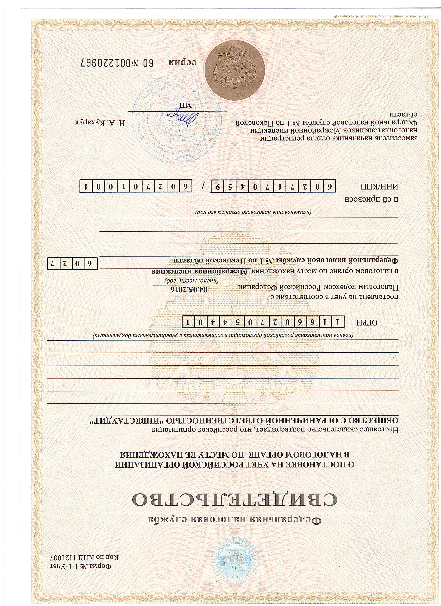

Аудиторская компания ООО «Инвестаудит»
О КОМПАНИИ
УСЛУГИ
КОНТАКТЫ
О КОМПАНИИ
Полное наименование: Общество с ограниченной ответственностью
«Инвестаудит».
Сокращенное наименование: ООО «Инвестаудит».
Дата государственной регистрации юридического лица 04.05.2016 года.
Основной государственный регистрационный номер (ОГРН) 1166027054401.
Идентификационный номер налогоплательщика 6027170459.
Адрес постоянно действующего исполнительного органа:180000, г. Псков,
Октябрьский проспект, 30,22.
Аудиторская компания ООО «Инвестаудит» является членом
саморегулируемой организации аудиторов Ассоциация «Содружество» (СРО
ААС), включенной в Государственный реестр саморегулируемых
аудиторских организаций, размещенный на сайте Минфина
России www.minfin.ru.
Общий регистрационный номер записи(ОРНЗ) ООО "Инвестаудит" в реестре
аудиторских организаций 11606029536, что подтверждается свидетельством
о членстве в саморегулируемой организации аудиторов.
Дата и номер решения о приеме в члены СРО ААС: 30.05.2016 г., № 220
ООО «Инвестаудит» не является участником российской сети (группы)
аудиторских организаций, а также не является участником международной
сети (группы) аудиторских организаций.
